New Form, browse, report, and editing layouts V9
Supercontrols
Supercontrols are a new type of high level control that can be placed on Form layouts. Some supercontrols can also be placed on Report layouts. Supercontrols are discussed in detail in the 'Supercontrols' section.
Static HTML Object
Alpha Five now supports a new object type that can be placed on Forms, Reports, Labels and Letters. The static HTML object is similar to the static RTF object, but it contains HTML text and it gives you much more flexibility in laying out the contents of the object than the static RTF object offers. Just like the static RTF object, the static HTML object can contain placeholders for the fields, calculated fields, and variables in your layout. The static HTML object can also contain clickable hyperlinks that invoke Xbasic scripts.
Placing a Static HTML Object on a Layout
To place a static HTML object on a Layout, you use the new 'Static HTML' tool in the toolbox:
|
|
|
Toolbox showing the Static HTML Object |

Draw the object onto the layout. The object shows a button with a pencil in the top right corner. Click on this button to open the Static HTML editor.
Notice that the toolbar in the editor contains a 'Fields...' button. When you click this button, a list of fields and variables in the current layout is displayed. You can place these fields in your static HTML. When the form is run, these fields show data from the current record. Notice also, that the toolbar contains a button labeled 'Xbasic...'. This allows you to put a hyperlink in your HTML that will execute Xbasic code.
| 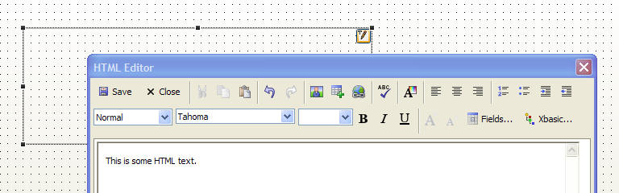 |
|
HTML Editor for Static HTML Objects |
Placing Fields and Expressions in the Static HTML Object
To place a field (including calculated fields that were previously defined by clicking the XY button on the toolbar) into the static HTML object, click the 'Fields...' icon on the toolbar. A pop-up field Drag&Drop list appears.
|
|
|
Fields DragDrop List in the Static HTML Editor. |

Drag fields from the list and drop them into the editor. The field placeholders are shown in the HTML enclosed in curly braces. For example:
Customer Lastname: {lastname}
You can actually enter any valid Xbasic expression in the curly braces. This allows you to define calculated fields on-the-fly. For example.
We will be visiting your location at {alltrim(city) + ", " + alltrim(state) + " " + zip} next week.
The image below shows a static HTML object on a form at run-time and at design-time. Notice that the HTML contains both static text and field place holders. At run-time, the field placeholders are replaced by values from the current record. The HTML also contains a hyperlink that will open another form to edit this customer information.
| 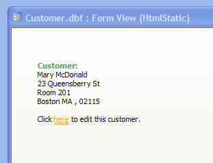 | 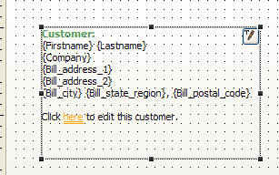 |
|
Form with a Static HTML Object at Run-time. |
Form with a Static HTML Object at Design-time. |
The HTML in the static HTML object is rendered using Alpha's built-in HTML rendering engine (and not Internet Explorer). As a result, features such as transparent backgrounds for the HTML object are supported. This is important if your form background has a gradient background. The gradient background will 'shine through' your HTML object, as shown below.
| 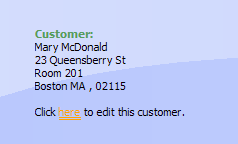 |
|
HTML Object can have a transparent background. |
Suppressing Blank Lines in HTML Text
Like the static RTF object, it is often desirable to suppress blank lines in the HTML text (resulting from fields that have no data in them, such as an 'Address2' field). No special action is necessary to cause blank lines to be suppressed (unlike the RTF object, where it is necessary to use Shift+Enter to terminate a suppressible line). If you simply press Enter at the end of a line that has a suppressible field in it, the line will be wrapped in
tags, and will be suppressed if empty.
Note however, that if you press Shift+Enter at the end of the line, the line will have not get wrapped in
and
tags, and instead will have a trailingtag and in this case, it will not be suppressed.
| 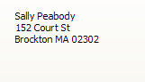 |
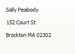 |
| 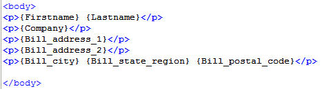 | 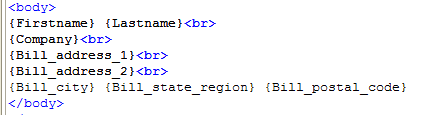 |
|
Static HTML with suppressible blank lines. Notice that each line is
wrapped in tags because user pressed Enter at end of each line |
Static HTML with non-suppressible blank lines. Notice that each line is
terminated with because user pressed Shift+Enter at end of each line. |
Watch a demonstration of static HTML objects
Date Picker, Date/Time Picker and Time Picker Smart Fields
The date picker control has a fresh new look, and two new smart fields have been defined. The date/time picker can be used for Time fields and the Time picker can be used for shorttime fields.
Watch a demonstration of the new date/time picker and the new time picker smart fields
Inserting GUIDs into Fields
It is now easier to insert GUIDs into fields. A GUID (Globally Unique ID) is a special unique value. You can insert a GUID into a field when you are editing a record by using the new Edit, Insert, GUID command. You can also use the Shift+Ctrl+G shortcut.
HTML Bubble Help
Most of the controls on an Alpha Five form allow you to define bubble help that is displayed when the mouse hovers over the control. You can now use HTML to define the bubble help. This gives you enormous control over how the bubble help will look. HTML Bubble Help can display data from the current record (including images) and it can contain hyperlinks that execute Xbasic code. This allows you to create dynamic bubble help and expand the ways in which bubble help can be used.
For example, bubble help can now be used to display more detail for a particular object on a form. Say for example, your form contains an image field. To conserve space on the form, you might have defined the image object to be quite small. You can define bubble help for this image object to display a larger view of the image when the mouse is over the image. Or you might have bubble help that displays additional detail about the record you are viewing.
Note: You can now also specify the delay before the bubble help is displayed for each control. This is useful because bubble help now can have several different purposes. In some cases, it is intended to give help to a user who might not be sure what a particular control's purpose is. In this case a small delay before showing the help is appropriate. In other cases, bubble help might be to show a larger image for a thumbnail image, or more details about a particular record. In these cases, you might not want any delay before showing the bubble help.
The Bubble Help Editor has been redesigned for Version 9. When you define Bubble Help for a control, click the 'Edit...' button to bring up the Bubble Help Editor. You can choose the bubble help style. With each selection, the editor changes to present the appropriate options to the user.
| 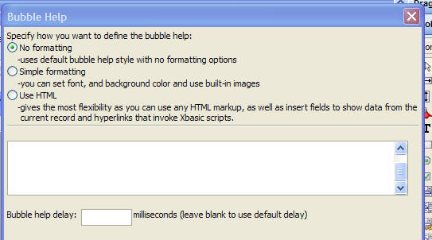 |
|
Editor for unformatted bubble help. |
| 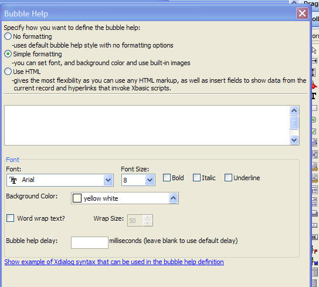 |
|
Editor for bubble help with simple formatting. |
| 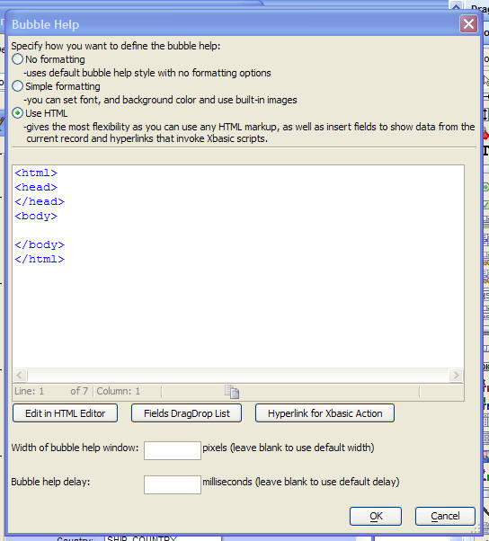 |
|
Editor for HTML format bubble help. |
To place fields in the bubble help, click the 'Field DragDrop List' button. This opens a window showing all of the fields in the table(s) on which the current form is based. Drag fields from the list and drop them into the editor. Fields are placed into the text enclosed in curly brackets. For example:
{firstname} {lastname}
would display the firstname and lastname from the current record.
You can enter any valid expression, not just simple fieldnames. For example, you might enter this into the bubble help:
{alltrim( upper(lastname) ) + ", " + alltrim( upper(firstname) )}
to display names in this format: SMITH, JOHN.
When you please an image field in the HTML, Alpha Five will automatically wrap the fieldname in an special function. This function generates the special HTML syntax for displaying images.
For example, when you drag a field called MyImage (assume that this is a Jpeg, Bitmap, or Linked Image field) from the DragDrop list to the Bubble Help editor, you will notice that Alpha Five will actually insert the following expressions:
a5_HTML_extended_image_field_format("MyImage","")
The second argument to this function is optional, but can be used to insert
any additional markup that you want in the tag that this function will
generate at runtime. For example, if you want the image to be 3 inches wide by 5
inches high, with a title of 'My image', you would modify the expression as
follows:
a5_HTML_extended_image_field_format("MyImage","style=\"width: 3in; height: 5in;\" title=\"My image\"")
Hyperlinks in Bubble Help
You can place hyperlinks in your bubble help that open other web pages in another small window or that execute Xbasic code. To place a hyperlink that executes Xbasic code, click the 'Hyperlink for Xbasic Action' button. This will open the dialog shown below where you can define your Xbasic script:
| 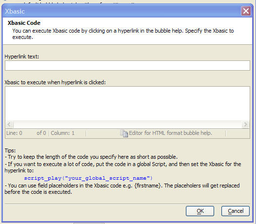 |
|
Defining a Hyperlink to execute Xbasic code. |
Watch a video demonstration of defining HTML bubble help.
Static Bitmap Objects - Bubble Help
You can now define bubble help for static bitmap objects on forms. This is useful if you have a bitmap that represents a target for the user to hold the mouse over and then display HTML bubble help with more details about the current record.
User Defined Smart Fields
You can turn any field in a Form into a smart field. When the field has focus, an icon is displayed next to the field and when the user clicks the icon an event is fired.
In the image below, the 'Filename' column has focus, and the smart field button is shown in the row that has focus.
|
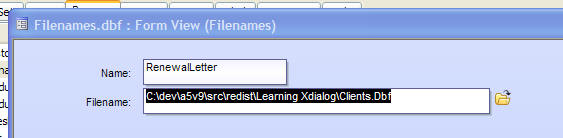 |
|
User Defined Smart-Fields. |
To define a smart-field, right click on the field and select Properties. On the 'Setup' tab, check the 'User Defined Smart Field' checkbox.
You can also define a smart field through Xbasic by setting the field's 'Focus_button' property to the name of the icon to use. You can set this property in the Form's OnInit event.
Note that the control does not normally instantiate a 'focus_button' property, so the .Property_Add() method must be used to set the property value for the first time.
For example, here is the OnInit event for the above form ('filename' is the name of the object that is bound to the 'filename' field) :
filename.Property_Add("focus_button","$a5_open")
If you wanted to set a column in an embedded browse to be a smart field, you would use syntax like this in the form's OnInit event (where 'browse1' is the name of the embedded browse object):
browse1:filename.focus_button = "$a5_open"
To define the event handler for the smart field button, you place code in the control's OnPush event.
For example:
dim fn as c
fn = ui_get_file("Filename","")
if fn <> "" then
filename.text = fn
end if
Note: User defined smart-fields can also be defined for Browses.
Watch a video demonstration of this feature.
Capsule Border Style
Objects on forms now support a new 'capsule' border style.
|
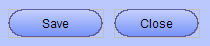 |
|
Capsule button style |
By turning off one of the object edges, as shown below, you can get great looking buttons.
|
Capsule button style with left and |
|
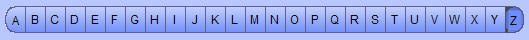 |
|
Multi-state button with capsule style border. |
Improved Anchor Toolbar
The Anchor toolbar has been improved. It now supports special 'quick select' buttons on each corner that turn on the necessary anchors. For example, if you click the top right button, the 'anchor to top' and 'anchor to right' buttons are automatically selected.
|
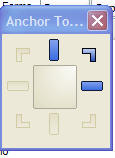 |
|
New 'Anchor' toolbar |
Remembering Last Run Query
In versions of Alpha Five prior to V9, if you did not explicitly define a filter and order for a Form or Browse layout, then when you opened the layout, Alpha Five would use the last run query for the table on which the Form or Browse was based. This would sometimes confuse users because if a script had run a query that found no records (and had not set the 'Do not remember query' flag), then when the user opened a Form or Browse that was based on that table, the Layout would be in Enter New Record mode because the remembered query had no records.
In V9, the Form and Browse Properties dialog has a new flag on the Filter/Order tab. Unless you explicitly check the 'Use last run query' box, when you open a Form or Browse layout now, if you have not defined a filter expression, the Layout opens showing an unfiltered view.
|
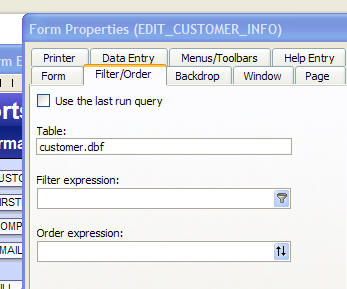 |
|
Filter/Order Property Pane |
User Defined Formatting
When you place a field object on a layout, you can define the formatting for the object by right clicking on the object and brining up the Properties Dialog, navigating to the 'Format' tab and then selecting a style from the 'Format Style' dropdown box. While Alpha Five already offers a large number of formatting styles, there is always the possibility that you have some special requirement. Now, you can define your own format styles and they will automatically appear in the list.
To define a format style you must create a UDF (User Defined Function) with a name that follows a special naming convention. The drop down list of available format styles will display the text in the function description.
The table below summarizes the naming convention and function prototype that you must create for each data type.
| Data Type | Sample Function Prototype |
| Numeric |
function entry_format.num.formatName as c (value
as n, width as n, decimals as n) end function |
| Character |
function entry_format.char.formatName as c (value
as c, width as n) end function |
| Logical |
function entry_format.log.formatName as c (value
as l, width as n) end function |
| Date |
function entry_format.date.formatName as c (value
as d, width as n) end function |
| Time |
function entry_format.time.formatName as c (value
as t, width as n) end function |
Important: formatName is limited to 6 characters.
Note: The function prototype for numeric types passes in decimal places, whereas all other types do not.
return_formatted_value is the formatted value that your function computes.
Normally, if your formatted value has trailing spaces, Alpha Five will suppress trailing spaces when displaying the formatted data. If you want to preserve trailing spaces, use the special character, chr(27), rather that a space.
Example:
The following user defined format for a numeric field will display '
function entry_format.num.fmt1 as c (value as n, with as n,
dec as n)
'DESCRIPTION:Accounting format
if value = 0 then
entry_format.num.fmt1 = "
else
entry_format.num.fmt1 = "" + value
end function
Tip: You can use user defined formats in the str() function. The format code would be "U" followed by the function's formatname. In the example above, the formatname is 'fmt1', so you can use 'UFMT1' as the format code in the str() function.
New Format Options
Two new format options have been added for formatting numeric fields on Layouts. These formats are suitable for financial reporting. The formats are:
'Accounting $ (123,456.34)' which prints positive numbers, negative numbers and zeros as follows:
$ (123,456.23)
$ 56,345.21
-
'Accounting (123,456.34)' which prints positive numbers, negative numbers and zeros as follows:
(123,456.23)
56,345.21
-
Note: The above two formats are actually implemented using the new User Defined Formatting option described in the previous section. The function that defines the first of the new formatting options is shown below. If you want to make modifications to this formatting functions, just create a function based on this functions, changing the last part of the function name ('act1') to a name of your choice, and update the 'DESCRIPTION' comment.
function entry_format.num.act1 as c (value as n, width as n,
dec as n)
'DESCRIPTION:Accounting '$ 234,123.23 ', '$ (234,123.23)', ' - '
'LIMITATIONS:X
if value = 0 then
'chr(27) adds a non-suppressible blank character at end
entry_format.num.act1 = "-" + chr(27)
else
dim txt as c
dim len as n
dim txt as c
dim padLength as n
txt = str(value,width,dec,",(")
txt = alltrim(txt)
if value < 0 then
len = len(txt)
padLength = width - (len + 1)
txt = "$" + replicate(" ",padlength)
+ txt
entry_format.num.act1 = txt
else if value > 0 then
txt = txt + chr(27)
len = len(txt)
padLength = width - (len + 1)
txt = "$" + replicate(" ",padlength)
+ txt
entry_format.num.act1 = txt
end if
end if
end function
Default Forms
Previously, when a default form (or a genie generated form) was displayed, Alpha Five generated the form showing a colon character at the end of each field label. Now, Alpha Five no longer puts in the colon after each field label.
If you prefer to have the colon in the field label, go to View, Settings, Preferences, Forms and select colon as the field label terminator.
Browse Layouts
Browse - Smart Fields
Smart fields are now supported in browse. This means, for example, that you can configure a date field in the browse to have a button that opens the date picker, or a numeric field with a button that opens the calculator. The following smart field controls are supported
- Date picker
- Date/time picker
- Time picker
- Email - opens either the Alpha Five e-mail client, or your default e-mail client with the e-mail address in the current field already filled into the e-mail address.
To define a smart field, edit the browse layout, right click on a column and select Properties, and then choose the Control Type on the Setup pane of the Properties dialog box.
You can also use Xbasic automation to set the column's smart field type. For example, the following Xbasic command set's the 'orderdate' column smart field to a date/time picker.
MyBrowseName:Orderdate.Field.Style = "popup.time"
 |
|
Time field in a browse showing the Date/Time picker. |
Browse - Image Fields
Image fields in browse now support the standard image scaling options for image fields on Forms. You can now specify Absolute, Best Fit, Tile and Stretch. This screenshot shows the Best Fit option.

Browse - Bubble Help
You can now define bubble help for columns in browses. Like bubble help in forms, you can use three different syntaxes to define the bubble help - simple, Xdialog and HTML. HTML bubble help is extremely powerful because you can create dynamic bubble help that references values from the current record.
The image show below illustrates these new features.
When the mouse is over the thumbnail image, the bubble help shows the full size image. Underneath the full size image, the person's name is show. This illustrates that HTML bubble help is being dynamically constructed using data from the current record.
To reference values from the current record in HTML bubble help, you enclose an expression in curly braces. For example:
{alltrim(firstname) + " " + alltrim(lastname)}
|
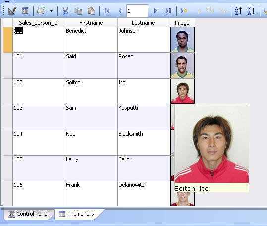 |
|
Browse showing bubble help for the Image column. Bubble help shows full size image and name from the current record. |
Watch a video demonstration of this feature.
Watch a video demonstration of how the bubble help was defined.
To define bubble help for a browse column, right click on the column (when the Browse layout is in design mode), and select Properties. The properties dialog now has a new 'Help Entry' tab.
To define advanced bubble help (i.e. bubble help that uses HTML syntax), click the 'Edit...' button. This brings up the Bubble Help Editor. See Bubble Help Editor for more details.
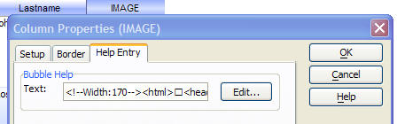
Browse Vertical Scrollbar
The behavior of the vertical scrollbar in both stand-alone and embedded browses has been substantially improved. The slider can now be used to set the current record, regardless of the current sort order. Previously, the slider could only be used if the table was in record number order (which, in the case of an embedded browse is never the case). This makes using the vertical scrollbar much more natural.
In addition, you can now define bubble help that shows when you are dragging on the vertical scrollbar. By default, Alpha Five shows the key value for the current record based on the current sort order of the table.
So, if the table was in record number order, as you dragged on the slider, it would show the record numbers of the current record in the browse. But, if the table was ordered by 'city', then as you dragged on the vertical scrollbar, the bubble help would show the different cities in the table.
The text shown in the bubble help is user customizable.
The browse has a new property called 'scrollbar_tooltip' which defines the expression for the scrollbar bubble help.
|
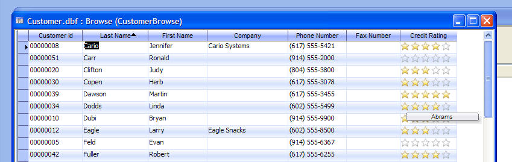 |
|
Vertical scroll bar on Browse has bubble help showing key value of record what would get focus if you stopped dragging on the vertical slider. |
To turn off bubble help, set this property to "
If you leave this property blank, then the bubble help will be set to the system default.
The following keywords can be used in the bubble help expression:
| Keyword | Meaning |
| position | The logical record number of the current record in the current query. This differs from the physical record number. For example, if the table was sorted by 'City' and 'Atlanta' was the first city in the table, the logical record number for this record is 1 even though its physical record number might be 12356. |
| extent | Total number of records in the current query. |
| key | Index key value of the current record. If table is in record number order, then record number. |
| order | Order expression for the current query. If current query is record number then this field returns 'Record Number'. |
Example bubble help expressions:
| Expression | Description |
| key + " " + int((position/extent)*100) + "%" | Shows the key value, and the percentage into the current view. E.g. "St. Louis 53%" |
| " " + position + " of " + extent | Shows logical record number of total records in query E.g.: "3 of 20" |
| "Record " + position + " of " + extent | Same as previous example, but adds the constant text 'Record'. E.g. "Record 3 of 20" |
| Order + ": " + key | Shows the order expression and the key value. E.g. "State: MA" |
To set the bubble help using the Browse Properties dialog, select the Browse tab and then click the 'Vertical Slider Properties' button.
| 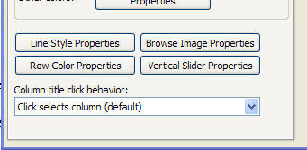 |
|
Editing the slider bubble help property. |
This will open a builder, as shown below:
|
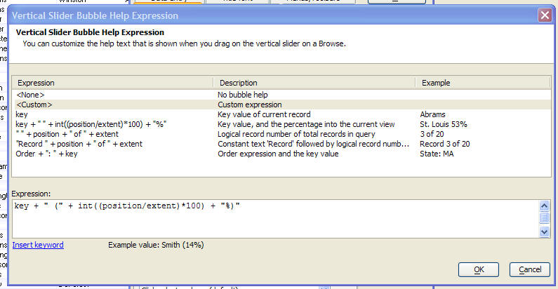 |
|
Genie to define the 'scrollbar_tooltip' property for the Browse's Vertical Slider |
Watch a video demonstration of this feature
Column Ellipses
You can now set a new property on a browse column to display ellipses in a cell when the browse column is too narrow to display all of the text in the cell. In the screen shot below, the 'Company' column is too narrow to show the full company name for certain of the rows.
To set this property, right click on the Browse column in design mode, and select Properties. On the Properties dialog, select the Format tab and set the option in the 'Ellipsis' dropdown box. This property can have these values:
- None
- End ellipsis - ellipses shown at the end of the text
- Path ellipsis - data is assumed to contain a path name and so the path, but not the filename, is shown with ellipses
- Word ellipsis
|
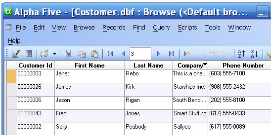 |
|
The Company column is formatted to show ellipses for cells that have more text than can be displayed in the given column width. |
User Defined Smart Fields
You can turn any column in a Browse into a smart field. When the column has focus, an icon is displayed next to the column and when the user clicks the icon an event is fired.
In the image below, the 'Filename' column has focus, and the smart field button is shown in the row that has focus.
|
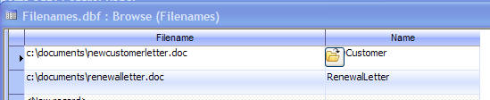 |
|
User Defined Smart-Fields. |
To define a smart-field, right click on the column and select Properties. On the 'Setup' tab, check the 'User Defined Smart Field' checkbox.
You can also define a smart-field through Xbasic by setting the column's 'Focus_button' property to the name of the icon to use.
You can set this property in the Browse's OnInit event (for an embedded Browse, you would use the Form's OnInit event).
For example:
Filename.focus_button = "$a5_open"
To define the event handler for the smart field button, you create a function in the Browse 'Events' scripts. The function is of the form:
function objectName_FocusButton
For example, in the above case, the object name (i.e. the name of the column in the browse that is bound to the 'filename' field) is 'filename'.
When the user clicks the smart field button, Alpha Five will prompt for a filename and fill in the data in the browse cell with the user's selection.
function filename_FocusButton
dim fn as c
fn = ui_get_file("Filename","")
if fn <> "" then
filename.text = fn
end if
end function
Note: User defined smart-fields can also be defined for Forms. In the case of forms, however, the event handler is defined for the field's OnPush event.
Report Layouts
This section applies to all report types - reports, labels and letters.
Interactive Reporting
Alpha Five now has new 'interactive reporting' features. These features are also sometimes referred to a 'drill down' or 'drill through' reporting.
To support interactive reporting, you can now put buttons and hot-spots on reports, and you can define events that should occur when these buttons or hot-spots are clicked. You can also define events for field objects on reports (which is essentially equivalent to putting a hot-spot object over a field object). You can define the code for these events using either Action Scripting, or hand-coded Xbasic.
When you preview a report (or label or letter), the buttons, hot-spots and fields for which OnPush events were defined become 'hot' and clicking on them will invoke the event code that you have defined for the object.
Typical events that you might define for buttons, hot-spots and field objects include:
- Previewing another report to show more detail for the current row in a report - i.e. in a report showing a customer list and a balance outstanding for each customer, you could click on the 'amount due' field to open a report showing all of the unpaid invoices included in the amount due.
- Opening a form to show more detail for the current row - i.e. in a report showing a customer list, you could click on a button that was placed next to the customer id. This would open a form to edit information about the current customers.
- Running an Operation - e.g. you might have a button on an invoice report that exported all of the line items for the current invoice to an Excel file.
Report Event Context
When you invoke an event on an object in a report, the 'context' for the event is the current record. For example, say that you had a simple report that listed customers. In design mode the report will looks like this:

This report shows a 'customer id' field object which has been styled to use a blue font with underline and a hot-spot object on top of the field.
At print preview time, the report looks like this:

Say that you have the following code in the hot-spot's OnPush event:
t = table.current()
dim msg as c
msg = "You clicked on record number: " + t.recno() + "
which has data for: " + t.eval("alltrim(firstname)+' ' +
lastname")
msg = msg + crlf(2) + "You can also read data from the
controls on the report. Here we read the .text property
of the 'lastname' object: " + lastname.text
msg = msg + crlf(2) + "Here we read the 'lastname'
object's .value property: " + lastname.value
ui_msg_box("Notice",msg)
When the report is previewed, and you click one of the hot-spots, the context is the 'current record'. This means that if you click on the hot-spot in the first record shown in the report, the message box will display this message:
You clicked on record number: 1 which has data for: Michael Graham
You can also read data from the controls on the report. Here we read the .text property of the 'lastname' object: Graham
Here we read the 'lastname' object's .value property: Graham
The event script evaluates the following expressions, shown below with their evaluated value:
t.eval("alltrim(firstname) + ' ' + lastname) ---> Michael Graham
lastname.text ---> Graham
lastname.value --> Graham
Note that in the last two expressions ('lastname.text', and 'lastname.value'), 'lastname' is the name of the object that is bound to the 'lastname' field in the underlying table. It is only coincidence that the object name is the same as the field name.
Useful Information for Interactive Report Event Handlers
| Xbasic Code | Comment |
| Topparent.close() | Close the report preview window. This would be most useful in a page header or page footer section, since these sections appear on all pages, and only one instance of these sections are drawn for each page. |
| Topparent.preview_get() |
Returns a pointer to the report object that
contains the report. Gives you access to all of
the report object methods, such as:
.Next() .Prev() .First() .Last() .Zoom()
For example, in the report page header you might have a button that was used to navigate to the next page in the report. The Xbasic event handler would be: topparent.preview_get().Next()
|
Watch a video demonstration of Interactive Reporting
Watch a video demonstration of how an Interactive Report is defined
Reports - Detecting Runtime Calculated Field
Previously, if an error occurred in a calculated field when a report, label or letter was printed, Alpha Five simply omitted the calculated field from the report. Now, a new command is available on the Print Preview menu. The View, Show errors... menu option will display a dialog showing the name of the calculated field, and the error description.
 |
|
The 'Show errors..' command shows a dialog with calculated fields that have errors. |
Arguments in Layout Filters
When you define a Report, Label or Letter, you can store a filter expression as part of the layout definition. If you want to use parameters in this filter that are prompted for at run-time, you previously used Ask variables. While Ask variables are still supported, a new technique, using arguments, is now available. Arguments are easier to use than ask variables, and they provide the following benefits over ask variables.
- You can define default values and pick lists for arguments.
- You can provide values for argument values using Xbasic - Alpha Five will only prompt for argument values that are not supplied.
- You can customize some aspects of the dialog that prompt for the argument values.
When you open the filter/order builder from the layout editor, you will notice two new hyperlinks under the Filter textbox. The 'Define filter argument' hyperlink will open the 'Define/edit Arguments' dialog (show below) where you can define any arguments that you want to use in your filter expression.
Here are some examples of filter expressions that include arguments:
InvoiceDate >= :startDate .and. InvoiceDate <= :endDate
Balance > :whatBalance .and. AccountType = :whatAccountType
FlagOverdue = :Overdue
 |
|
Select Records dialog now allows you to define arguments and use them in your filter expression. |
 |
|
Dialog allows you to define arguments and customize the dialog box that prompts for the argument values. |
When the layout is printed using Xbasic (by calling the report.print(), report, preview(), letter.print(), letter.preview(), label.print() or label.preview() method), you can optionally provide argument values.
The following example show how one might use the report.preview() method to preview a report for which arguments have been defined:
Examples:
'In this example, arguments are not supplied, so a dialog box will be displayed, asking for the value for the ':whatstate' argument.
report.preview("CustomerList")
'In this example, arguments are passed in, and so no dialog box will be displayed asking for argument values.
dim args as sql::arguments
args.add("whatState","MA")
report.preview("CustomerList","","",.f.,.f.,args)
Using Arguments in Run-time Filters
When you print a layout using Xbasic, Alpha Five has always allowed you to supply a run-time filter (which is in addition to any filter that might have been defined as part of the layout definition). You can now use arguments in run-time filters.
All of the
The following example shows how a run-time filter can be defined using arguments:
dim args as sql::arguments
args.set("whatstate","ma")
report.preview("customer List","bill_state_region = :whatstate","",.f.,.f.,args)
Note that in the above example, since the argument's value was passed in, there was no need to prompt for the its value.
It is not required that you pass in argument values - you can have Alpha Five prompt for the values. However, if you want to have Alpha Five prompt for argument values you must pass in the argument definitions to the method. To pass in argument definitions, you set the .argumentdefinitions property in the optional 'options' argument.
To define arguments, you can use the a5_definearguments() function.
In the following example, the 'whatState' argument is defined and stored in a string, then the definition is passed in when the report.preview() method is called. A value for 'whatState' is NOT passed in, so Alpha Five will prompt for the value.
Example:
'Define the 'whatstate' argument
txt = a5_definearguments()
'Now that we have the argument definition stored in a string, we can pass it into report.preview()
dim options as p
options.argumentdefinitions = txt
'Notice that we are not passing in any argument values, so null_value() must be specified for the optional
'arguments parameter.
report.preview("customer List","bill_state_region = :whatstate","",.f.,.f.,null_value(),options)
Printing Argument Values in Layouts
When you use an argument in a report filter, or you pass in arguments to the
To do this, you define a calculated field that uses the a5_getArgumentValue() function.
For example, say you have defined a report with a filter of:
orderdate >= :startdate .and. orderdate <= :enddate
You also define these arguments in the report.
When the report is printed, you want to print out the value that the user entered for 'startdate' and 'enddate'.
To do this, you define two calculated fields:
startdatevalue = a5_getArgumentValue("startdate")
enddatevalue = a5_getArgumentValue("enddate")
You can then place these calculated fields on your layout.
Note that a5_getArgumentValue() always returns a character value, regardless of the data type of the argument. If you need to convert the value returned by a5_getArgumentValue() to a specific type, you can use the convert_type() function. For example:
startdatevalue = time("dd-MON-yyy",convert_type( a5_getArgumentValue("startdate"),"t") )
This will report the date in this format: 13-DEC-2009
Save Reports as Excel Files
You can now save Reports, Labels and Letters as Excel files.
|
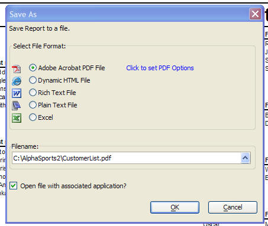 |
|
The Report 'Save-As' dialog showing the new Excel option. |
The Report.SaveAs(), Letter.SaveAs(), Label.SaveAs(), Form.SaveAs() and Browse.SaveAs() methods now all accept "Excel" as an argument value for the save_as_format argument.
Editing Layouts
Dynamic Guidelines
When you are designing a Form, Report, Label or Letter layout the new 'dynamic guidelines' feature makes it much easier to line up objects on your layout. When dynamic guidelines are turned on and you are moving or resizing an object, as soon as the object is aligned (within a user specified tolerance) to another object, dynamic guidelines are drawn on the screen.
 |
|
Dynamic Guidelines at work. Button2 is being
moved. The blue rectangle shows where Button2 has been dragged |
To turn on dynamic guidelines, select the Form, Dynamic Guidelines... command. In the case of Reports, this command is under the top-level Reports command. In the case of Letters, it is under the top-level Letters command, and in the case of labels, it is under the top-level Labels. command.
The dialog allows you to specify if the dynamic guidelines feature should be turned on, what the snap tolerance should be. For example, if the snap tolerance is set to 10 pixels, then when you are moving an object, if the top of that object is within 10 pixels of the top of another object and you drop the object, its top will be aligned with the top of the other object.
 |
|
The 'Dynamic Guidelines' dialog box. |
TIP: When dynamic guidelines are turned on, you may find it easier to work with the layout if you turn off 'snap to grid' and the display of grid lines. See the Grid... command.
Watch a video demonstration of this feature.
Watch a video demonstration of this feature in the Report Editor.